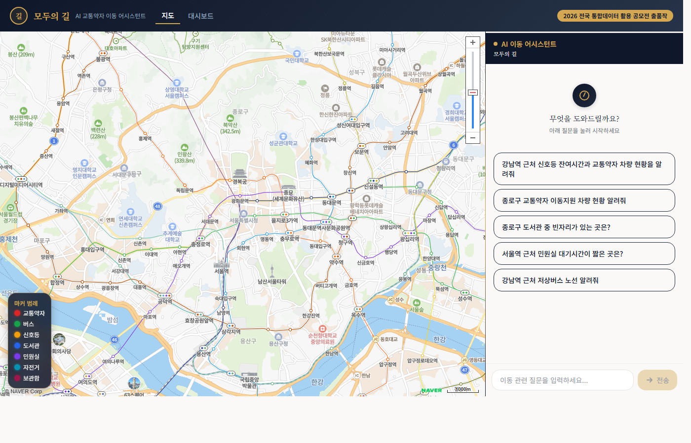
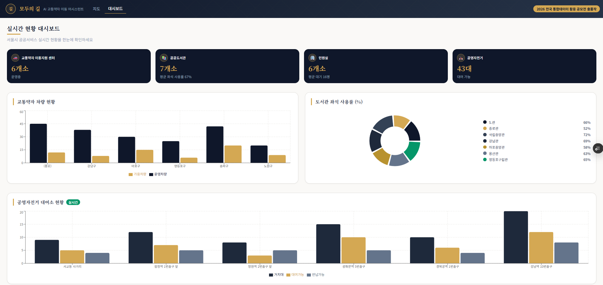
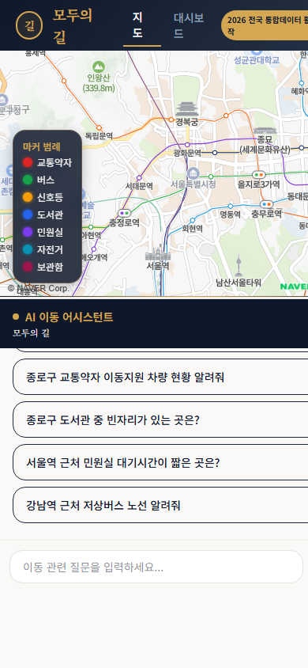

1) 개발 결과물 개요
우리나라 교통약자(장애인·고령자·임산부)는 약 1,500만 명(전체 인구 29%)이지만, 이동 정보가 7개 이상 시스템에 분산되어 통합 확인이 어렵습니다. 「교통약자의 이동편의 증진법」 제3조에 따른 이동권 보장을 위해, 7종 공공데이터를 AI 대화형으로 통합 제공하는 서비스를 기획했습니다.
| 핵심 문제 | 현황 | 영향 |
|---|
| 횡단보도 신호 정보 부재 | 잔여시간 실시간 확인 불가 | 보행 안전 위협 |
| 교통수단 정보 분산 | 저상버스/이동지원 차량 위치 파악 불가 | 불필요한 대기 |
| 목적지 혼잡도 미확인 | 도서관 좌석, 민원실 대기시간 사전 확인 불가 | 장시간 대기 |
| 정보 접근성 장벽 | 7개 이상 앱/사이트 번갈아 확인 | 디지털 취약 계층 소외 |
서비스 개요
| 서비스명 | 모두의 길 (modugil) |
| 유형 | 반응형 웹앱 (모바일/데스크톱) |
| 대상 | 교통약자 (장애인, 고령자, 임산부) 및 보호자 |
| 핵심 가치 | "하나의 질문, 모든 이동 정보" |
| 데이터 | 전국 통합데이터 7종 20개 API — 14개 AI 채팅 활용, 6개 프록시 |
| 서비스 URL | https://modugil.vercel.app/ |
💡 기획 의도: 교통약자에게 "대화 한 마디로 안전한 길을 찾아주는 AI 동반자"를 제공합니다. 검색→필터→확인 방식을 자연어 대화로 전환하여, 디지털 기기에 익숙하지 않은 고령자도 쉽게 이용할 수 있습니다.
2) 개발 결과물의 기능 및 특징
2-1. 시스템 아키텍처 (하이브리드)
Frontend — React 19.2 + Next.js 16.2 + Naver Maps + Recharts
▼
Backend (Next.js API Route)
키워드 라우팅 → 도구 병렬 실행 → Claude AI 자연어 응답
▼
Anthropic API
Claude Haiku 4.5
공공데이터 API
7종 20개 (apis.data.go.kr)
서버 사이드 키워드 라우팅으로 도구를 자동 선택·병렬 실행 후 Claude에 전달하여 자연어 응답을 생성합니다. Claude tool_use 대비 API 호출 1회로 단축하여 응답 속도를 최적화했습니다.
2-2. 선언적 도구 라우팅
const TOOL_ROUTING = [
{ keywords: /도서관|빈자리|열람실/, tool: 'get_library_seats', alsoInclude: ['get_accessible_transport'] },
{ keywords: /민원실|대기시간/, tool: 'get_civil_office_wait', alsoInclude: ['get_accessible_transport'] },
{ keywords: /신호등|횡단보도/, tool: 'get_traffic_light_status' },
{ keywords: /버스|저상버스/, tool: 'get_bus_realtime_location' },
// ... 7종 전체 매핑
];
※ 도서관/민원실 조회 시 교통약자 이동지원 차량을 alsoInclude로 자동 연계 — 목적지+이동수단 동시 안내
2-3. 교통약자 유형별 맞춤 안내
| 사용자 유형 | 맞춤 안내 |
|---|
| 휠체어 사용자 | 저상버스 위치, 경사로/엘리베이터 유무, 이동지원 차량 우선 안내 |
| 시각장애인 | 음향신호기, 잔여시간 음성안내, 점자블록 경로 |
| 고령자 | 충분한 신호 잔여시간, 가까운 시설, 대기 없는 서비스 우선 |
| 임산부 | 교통약자 전용 차량, 좌석 여유 있는 시설 안내 |
2-4. 기술 스택
| 계층 | 기술 | 버전 | 용도 |
|---|
| 프론트엔드 | React + Next.js | 19.2 / 16.2 | UI, SSR, 라우팅 |
| 스타일링 | Tailwind CSS | 4.x | 반응형 디자인 |
| 지도 | Naver Maps API | v3 | 위치 시각화, 7종 마커 |
| AI | Claude Haiku 4.5 | @anthropic-ai/sdk 0.80 | NLU + NLG |
| 차트 | Recharts | 3.8 | 대시보드 시각화 |
| 배포 | Vercel | - | 자동 배포, 엣지 네트워크 |
2) 개발 결과물의 기능 및 특징 (계속)
2-5. 메인 화면 (지도 + AI 채팅)

▲ 메인 화면 — 네이버 지도(좌) + AI 채팅 패널(우), 7종 컬러 마커 + 추천 질문
2-6. 실시간 현황 대시보드

▲ 대시보드 — 교통약자 차량/도서관/민원실/자전거 요약 카드 + 차트 + 대기현황 테이블
2-7. 모바일 반응형

▲ 모바일 — 지도(상단 50vh) + 채팅(하단 50vh) 세로 배치, 터치 친화 UI
3) 기존 서비스와 차별성 및 독창성
3-1. 경쟁 서비스 비교
| 비교 항목 | 카카오맵/네이버지도 | 토도웍스 | 모두의 길 |
|---|
| 교통약자 전용 | ✗ | 시각장애 특화 | ✓ 전 유형 |
| 데이터 종류 | 교통 위주 | 보행 경로 | 7종 20개 API |
| 인터페이스 | 지도 검색 | 지도 검색 | AI 대화 |
| 복합 질의 | ✗ | ✗ | ✓ |
| 목적지 혼잡도 | 일부 | ✗ | ✓ 실시간 |
| 자동 연계 추천 | ✗ | ✗ | ✓ |
3-2. 독창적 기술: 하이브리드 AI 아키텍처
| 비교 항목 | AI 미적용 (기존) | 모두의 길 (AI 적용) |
|---|
| 정보 조회 | 7개 앱 각각 방문 | 한 번의 대화 |
| 데이터 해석 | 원시 JSON 직접 해석 | 맞춤형 자연어 |
| 안전 판단 | 수동 위험 판단 | 자동 경고 생성 |
| 복합 질의 | ✗ | ✓ 지원 |
3-3. 데이터 통합 활용 시나리오 (독창성)
| 시나리오 | 통합 데이터 | 통합 가치 |
|---|
| 도서관 방문 | 좌석 + 교통약자 차량 + 신호등 | 빈자리 도서관까지 안전 이동 종합 안내 |
| 민원실 방문 | 대기시간 + 교통약자 차량 + 보관함 | 대기 짧은 민원실 + 짐보관 + 이동수단 |
| 외출 종합 | 버스 + 자전거 + 신호등 | 교통약자 유형별 복합 이동수단 비교 |
3-4. 사용자 시나리오: 휠체어 사용자 김철수(45세)의 도서관 방문
2
AI가 도서관 좌석 + 교통약자 이동지원 차량 동시 조회 (alsoInclude 자동 연계)
3
지도에 도서관(파랑) + 이동지원센터(빨강) 마커 동시 표시
4
"마포구립 서강도서관 잔여 좌석 12석. 이동지원센터 3대 차량 이용 가능합니다."
5
후속: "이동지원 차량 예약은 02-XXX-XXXX. 근처 저상버스 노선도 확인해볼까요?"
💡 한 번의 질문으로 목적지 정보 + 이동수단을 동시에 안내하여, 여러 앱을 번갈아 확인할 필요가 없습니다.
4) 공공데이터 등 데이터 활용성
4-1. 7종 전국 통합데이터 — 20개 API 엔드포인트
| # | 데이터 분류 | API 명 | 수 | AI 채팅 |
|---|
| 1 | 공영자전거 | 대여소 목록 / 실시간 현황 / 이용이력 | 3 | 2 활용 |
| 2 | 교통약자 이동지원 | 센터 목록 / 차량 / 운행 / 가용현황 | 4 | 2 활용 |
| 3 | 공공도서관 | 도서관 정보 / 현황 / 좌석 | 3 | 2 활용 |
| 4 | 물품보관함 | 보관함 정보 / 상세 / 실시간 | 3 | 2 활용 |
| 5 | 교통신호 | 교차로 목록 / 신호 상태 | 2 | 2 활용 |
| 6 | 민원실 | 민원실 정보 / 실시간 대기 | 2 | 2 활용 |
| 7 | 버스 | 노선 목록 / 정류장 / 실시간 위치 | 3 | 2 활용 |
| 합계 | 20 | 14 |
※ 나머지 6개 API(이용이력, 차량현황, 운행현황, 열람실현황, 보관함상세, 정류장)는 데이터 프록시 API(/api/data)를 통해 확장 기능에서 활용
4-2. 데이터 출처 및 획득 방법
| 항목 | 내용 |
|---|
| 데이터 출처 | 행정안전부 / 한국지역정보개발원 (KLID) 전국 통합개방 데이터 |
| API 기반 | apis.data.go.kr/B551982 — 공공데이터포털 인증키 기반 REST API |
| 획득 방법 | 공공데이터포털(data.go.kr) 서비스키 발급 → 실시간 JSON 호출 |
| 지속성 | 행정안전부 운영 공공 API — 법적 개방 의무 데이터로 지속 제공 보장 |
| 활용 범위 | 전국 광역시·도 단위 및 시·군·구 단위 조회 (10자리 지자체코드 매핑) |
| 가공 | 지역명→지자체코드 자동 변환, 정보+실시간 API 조인, 좌표 정규화(lot→lng) |
4-3. 프로젝트 구조
modugil/
├── src/app/api/chat/ # Claude AI 채팅 (route.ts + tool-executor.ts)
├── src/app/api/data/ # 동적 데이터 프록시 (7종)
├── src/app/dashboard/ # 실시간 대시보드
├── src/components/chat/ # 채팅 패널, 메시지 버블, 데이터 카드
├── src/components/map/ # 네이버 지도, 신호등 상세
├── src/lib/ai/ # Claude 클라이언트, 프롬프트, 도구 정의
└── src/lib/api/ # 공공데이터 클라이언트, 타입, 엔드포인트
5) 개발 결과물의 기술성과 구현 및 실현가능성
5-1. 안정성 및 성능 설계
| 항목 | 구현 |
|---|
| 캐싱 | 5분 TTL 인메모리 캐시 (동일 API 호출 절감) |
| 장애 대응 | 7종 Mock 데이터 자동 폴백 (API 장애 시 서비스 중단 방지) |
| 타임아웃 | 30초 타임아웃 + 1회 자동 재시도 |
| 병렬 처리 | Promise.all 기반 다중 API 동시 호출 |
| 보안 | API 키 서버사이드 환경변수 관리 |
5-2. AI 활용 상세 (가산점)
| 항목 | 내용 |
|---|
| 모델 | Claude Haiku 4.5 (Anthropic) — 비용 효율($1/백만 토큰) + 빠른 응답 속도 |
| SDK | @anthropic-ai/sdk v0.80 (서버사이드 API 호출) |
| 방식 | 하이브리드: 서버 키워드 라우팅(속도) + Claude NLG(자연어 품질) |
5-3. AI 활용 범위
| 영역 | 설명 |
|---|
| NLU | 한국어 자연어 질문 분석, 복합 질의 ("신호등과 저상버스") 처리 |
| NLG | 7종 API 원시 데이터를 교통약자 맞춤형 자연어로 변환 |
| 프롬프트 | 6가지 핵심 원칙 + 4유형 맞춤 지침 + 키워드→도구 매핑 규칙 |
| 안전 판단 | 신호 잔여시간 기반 횡단 안전 경고 자동 생성 |
5-4. AI 변환 예시
Before (원시 API 데이터)
{"crossroadName":"종로4가사거리","phases":[{"direction":"1","color":"GREEN","duration":"32"}]}
After (AI 자연어 응답)
종로4가사거리 신호등 현황입니다. 현재 1방향 녹색 신호이며, 잔여시간 32초입니다. ⚠️ 고령자분은 보행 속도를 감안하여 다음 신호를 기다리시는 것을 권장합니다.
5) 기술성과 구현 및 실현가능성 (계속)
5-5. 시스템 프롬프트 핵심
## 핵심 원칙
1. 항상 도구를 사용하여 실시간 데이터 조회 후 답변
2. 해당하는 모든 도구를 한 번에 동시 호출
3. 데이터는 표/목록 형태로 정리
4. 위치 데이터 포함 시 "🗺️ 지도에 표시했습니다" 안내
## 교통약자 유형별 맞춤
- 휠체어: 저상버스, 경사로, 이동지원 차량 우선
- 시각장애: 음향신호기, 점자블록 - 고령자: 충분한 신호시간
- 임산부: 전용 차량, 좌석 여유 시설
5-6. 구현 완성도 및 실현가능성
| 항목 | 현황 | 근거 |
|---|
| 서비스 배포 | ✓ 완료 | Vercel 자동 배포 — modugil.vercel.app |
| 실시간 API 연동 | ✓ 완료 | 7종 14개 API 실시간 호출, Mock 폴백 포함 |
| AI 통합 | ✓ 완료 | Claude Haiku 4.5 서버사이드 연동 |
| 반응형 UI | ✓ 완료 | 데스크톱(70/30 split) + 모바일(50vh/50vh) |
| 지도 시각화 | ✓ 완료 | 7종 컬러 마커, 인포윈도우, fitBounds |
| 대시보드 | ✓ 완료 | Recharts 기반 4종 통계 시각화 |
| 에러 처리 | ✓ 완료 | 타임아웃·재시도·폴백·"다시 시도" 버튼 |
| GitHub 공개 | ✓ 완료 | github.com/yonghwan1106/modugil |
5-7. 하이브리드 아키텍처 설계 근거
| 방식 | 장점 | 단점 | 채택 |
|---|
| Claude tool_use | 자율 도구 선택 | 다중 턴 왕복, 2~3초 추가 지연 | 향후 확장용 스키마 유지 |
| 서버 키워드 + Claude NLG | 단일 호출, 빠른 응답 | 키워드 매칭 한계 | ✓ 현재 채택 |